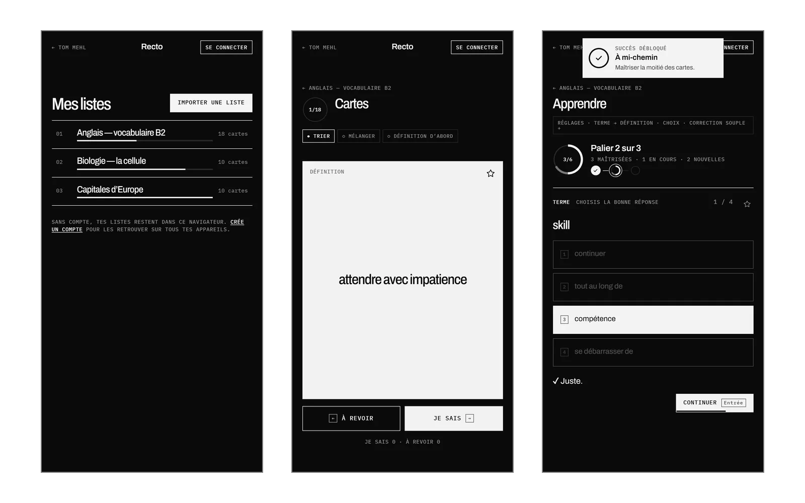
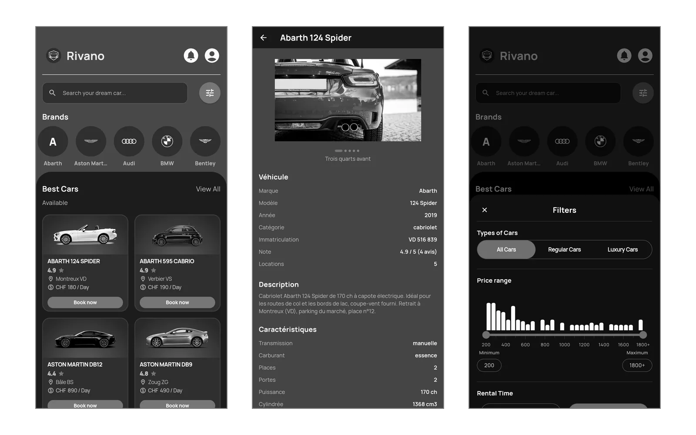
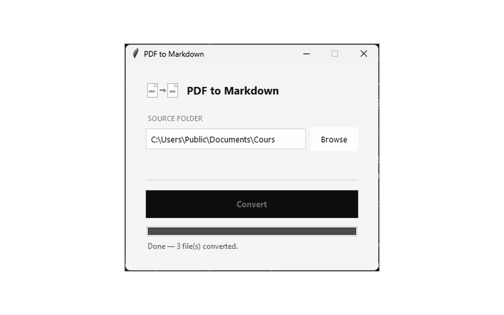
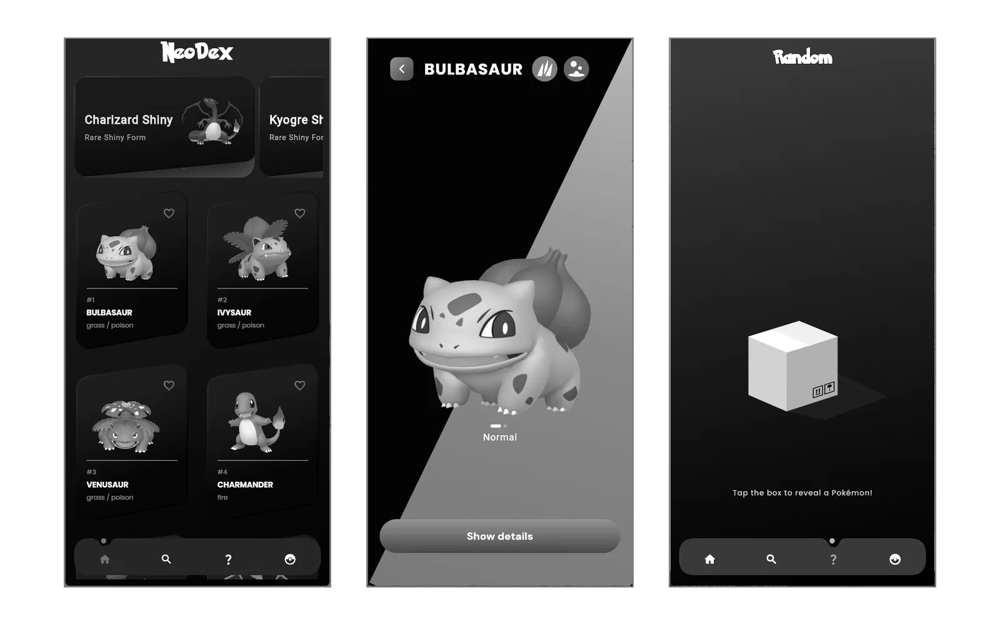
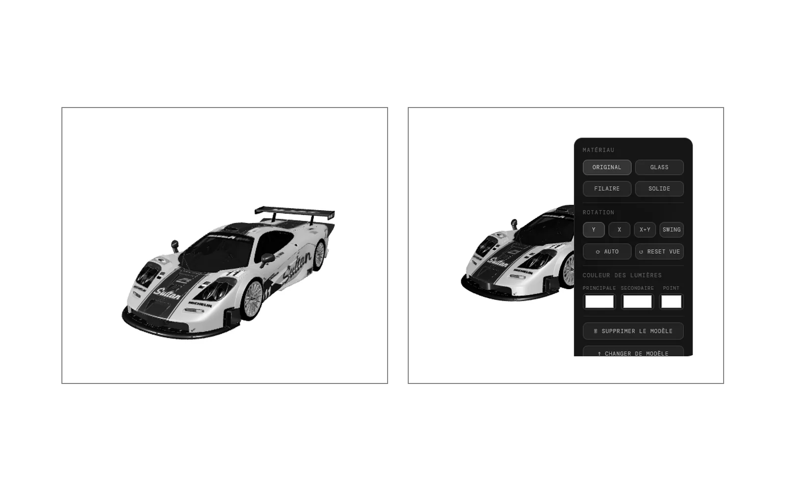

Tom
Mehl
Développeur
Je conçois et je code des applications web, mobiles et de bureau, de l’API à l’interface.
10 projets · 2026
Projets (10)
-
01Recto

Application de révision inspirée de Quizlet, réduite à l’essentiel : on importe une liste, on la révise en mode Cartes ou Apprendre.
- Import par copier-coller : séparateurs devinés (tabulation, « - », « : »…), aperçu en direct.
- Mode Apprendre par paliers d’environ 7 cartes : choix multiple, puis réponse écrite qui pardonne les fautes de frappe.
- Anneaux de progression animés et mini-succès pour donner envie de continuer.
- Sans compte dans le navigateur, ou avec un compte pour retrouver ses listes partout.
-
02Multi Web Manager
Navigateur multi-instance pour Windows : jusqu’à vingt pages web isolées en grille sur un écran, pilotées depuis une console d’administration sur un second écran.
- Chaque cellule est un vrai navigateur isolé : cookies, stockage et session séparés.
- Réplication de la souris : un clic dans une cellule est reproduit dans toutes les autres.
- Au redémarrage, la même grille rouvre les mêmes pages.
-
03Rivano

Application de location de voitures de luxe : un catalogue servi par une API REST, affiché dans une application Flutter fidèle à sa maquette Figma. Projet de troisième année, mené en Scrum.
- API Express et MongoDB documentée avec Swagger, testée avec Jest et Supertest.
- État géré avec Riverpod ; chaque écran traite le chargement, l’erreur et les données.
- Recherche, filtres et fiche détaillée de chaque véhicule.
-
04PDF to Markdown

Petite application de bureau qui convertit d’un coup tous les PDF d’un dossier en fichiers Markdown, enregistrés à côté des originaux.
- Un seul fichier .exe pour Windows, sans installation.
- Extraction du texte avec pdfplumber, empaquetage avec PyInstaller.
-
06Bookedo
-
08NeoDex

Application Pokémon complète : les 1025 Pokémon et leurs formes chromatiques, une recherche par nom, numéro ou type, et un Pokédex personnel.
- Client Flutter en architecture par fonctionnalités, avec Riverpod et GoRouter.
- API REST Express (MVC) documentée avec Swagger.
- Tirage d’un Pokémon au hasard, animé avec Lottie.
-
093D Viewer

Visionneuse 3D légère qui tourne entièrement dans le navigateur, pensée comme un widget pour une page de nouvel onglet.
- Glisser-déposer d’un modèle, rotation automatique, contrôle à la souris ou au doigt.
- Matériaux verre, filaire ou plein ; lumière réglable en direct.
- Modèles gardés dans le navigateur (IndexedDB), sans serveur.
À propos
Je développe des applications complètes : une API documentée d’un côté, une interface soignée de l’autre. Ce site rassemble mes projets, scolaires et personnels.
- Langages
- TypeScript
JavaScript
Dart
Python
PHP - Interfaces
- Flutter
Electron
HTML et CSS
Canvas, WebGL - Serveur et données
- Node.js, Express
MongoDB
SQLite
Swagger - Méthode
- Git
Jest
Figma
Scrum